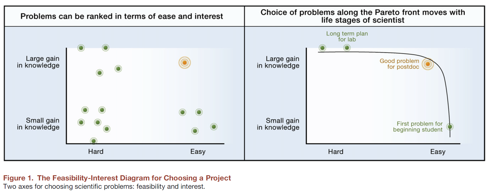
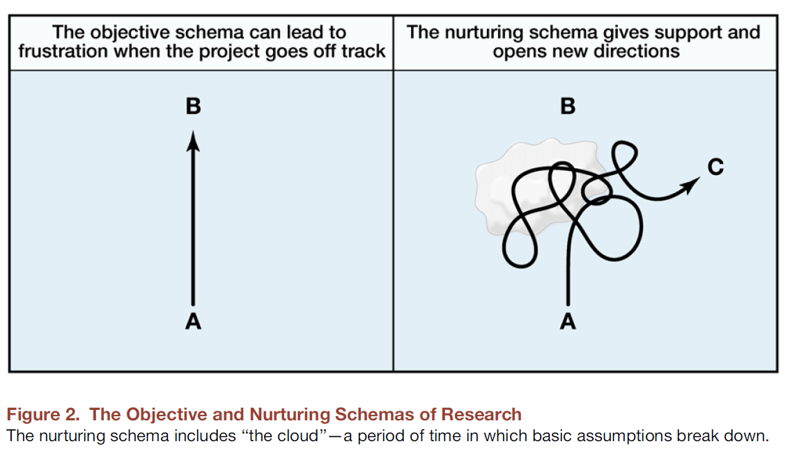

2 Da pergunta à conclusão
Perguntas, dados e evidências na pesquisa jurídica
2.0.1 O percurso deste capítulo
No capítulo anterior, discutimos o método científico como um protocolo para produzir conhecimento.
Agora, partimos desse protocolo para organizar o percurso da investigação:
Problema → Pergunta → Dados → Evidência → Conclusão
O método orienta a investigação, mas não define automaticamente o que perguntar, quais dados procurar ou o que podemos concluir. Essas decisões precisam permanecer conectadas durante toda a pesquisa. Uma pergunta bem formulada orienta a construção dos dados; os dados delimitam as evidências que podem ser produzidas; e essas evidências definem o alcance legítimo da conclusão.
2.1 Como escolher uma boa pergunta
2.1.1 Escolher a pergunta também é fazer pesquisa
“Escolher bons problemas é essencial para ser um bom cientista.”
— Uri Alon (2009)
Boas escolhas:
- permitem descobrir novos conhecimentos de forma competente;
- permitem que o pesquisador se expresse por meio da pesquisa;
- ajudam a organizar as decisões que serão tomadas ao longo da investigação.
2.1.2 O papel do grupo de pesquisa
O grupo de pesquisa:
- é um ambiente estimulante que tenta maximizar o potencial do estudante como cientista e ser humano;
- ajuda na escolha de problemas que promovam crescimento e pesquisa automotivada;
- oferece espaço para apresentar ideias, reconhecer dificuldades e reformular caminhos;
- não substitui a curiosidade e a responsabilidade do pesquisador pela pergunta escolhida.
2.1.3 O que é um bom problema?
Um bom problema científico deve ser:
- Viável: possível de realizar com os recursos e o tempo disponíveis.
- Interessante: capaz de gerar conhecimento real.
- Motivador: algo que desperte curiosidade genuína.
- Formador: permite crescimento e aprendizado.
2.1.4 Os dois eixos: viabilidade e interesse

- Eixo X — Viabilidade: tempo para conclusão e habilidades disponíveis no grupo.
- Eixo Y — Interesse: distância em relação ao conhecimento existente e contribuição esperada.
O objetivo é procurar problemas simultaneamente viáveis e interessantes. Uma pergunta muito interessante, mas impossível de investigar com o tempo, os dados e as habilidades disponíveis, não constitui ainda um projeto executável. De modo semelhante, uma pergunta facilmente respondida, mas incapaz de produzir conhecimento relevante, pode não justificar o esforço da investigação.
2.1.5 A pergunta depende do estágio da pesquisa
- Estudantes de graduação no começo da carreira: problemas mais delimitados, com retornos rápidos que permitam aprender o processo de pesquisa.
- Estudantes de pós-graduação: podem avançar no eixo do interesse, mas precisam considerar prazos e condições de execução.
- Pesquisadores experientes: podem se aventurar em problemas difíceis e inovadores, com horizontes longos e divisão em subprojetos.
A mesma pergunta pode ser apropriada para um pesquisador e inviável para outro.
2.1.6 A importância da exploração inicial
Um erro frequente é aceitar o primeiro problema que aparece.
- Escolhas rápidas podem levar à frustração.
- Cada semana dedicada à escolha pode evitar meses ou anos de trabalho em uma direção pouco produtiva.
- Ler, discutir, conhecer os dados e planejar também é pesquisa.
- Ter uma pergunta clara não significa conhecer antecipadamente todas as respostas.
Uri Alon propõe que estudantes não se comprometam imediatamente com um projeto: antes disso, precisam explorar possibilidades.
2.1.7 A voz interna
Quem decide como ordenar o interesse dos diferentes problemas?
O interesse é subjetivo e pessoal.
- Um problema que instiga pessoalmente ajuda a manter a motivação.
- A voz interna pode ser nutrida e guiada por orientadores cuidadosos.
- Orientar também significa ajudar cada pesquisador a identificar o padrão de questões que desperta sua curiosidade.
“Se eu fosse a única pessoa no mundo, qual desses problemas eu gostaria de resolver?”
2.1.8 Pesquisa como expressão
O projeto que consideramos interessante expressa o nosso filtro pessoal e a forma como percebemos o mundo.
- Esse filtro envolve valores sobre o que consideramos bom, relevante, verdadeiro ou digno de investigação.
- A multiplicidade de estilos e questões é uma das bases de uma ciência criativa e viável.
- Bons problemas estão ligados à nossa visão de mundo.
- Quando conseguimos nos expressar na ciência, o trabalho ganha significado pessoal.
2.2 A jornada da pesquisa
2.2.1 Do ideal ao real

O primeiro esquema representa uma linha reta entre a pergunta A e a resposta esperada B.
O segundo representa o caminho real: não linear, marcado por incertezas, resultados inesperados e descobertas.
2.2.2 O caminho real
No caminho idealizado:
- os desvios não são tolerados;
- busca-se a resposta B mesmo quando o custo se torna muito alto;
- o compromisso com a resposta esperada pode gerar frustração.
No caminho real:
- experimentos e estratégias podem não funcionar;
- algumas suposições se mostram inadequadas;
- uma fase de confusão pode permitir a entrada do desconhecido;
- podemos encontrar uma resposta C, mais interessante e viável que B.
2.2.3 Quando a pergunta precisa mudar
É normal reformular a pergunta quando conhecemos melhor a literatura, o campo e os dados.
Entretanto, a mudança precisa ser consciente e registrada.
Reformular não significa abandonar a pesquisa. Pode significar:
- delimitar melhor o fenômeno;
- adequar o alcance da pergunta;
- reconhecer uma limitação da fonte;
- identificar uma pergunta mais interessante;
- seguir uma descoberta que não estava prevista.
2.3 Da pergunta aos dados
2.3.1 Uma pergunta precisa ser investigável
Uma pergunta não é adequada apenas porque parece interessante.
Precisamos compreender:
- quais informações seriam necessárias para respondê-la;
- o que cada registro deverá representar;
- quais grupos, períodos e lugares serão observados;
- quais informações estão disponíveis;
- quais informações precisarão ser construídas;
- quais limitações a fonte impõe à análise.
2.4 Exemplo jurídico: violência psicológica
2.4.1 Do problema à pergunta
A Lei nº 14.188/2021 introduziu no Código Penal o crime de violência psicológica contra a mulher, previsto no artigo 147-B.
Uma inquietação inicial pode ser formulada de maneira ampla:
A criminalização ampliou a proteção das mulheres contra a violência psicológica?
Para produzir evidências, precisamos transformar essa inquietação em perguntas empiricamente investigáveis.
2.4.2 Uma pergunta investigável
Como o artigo 147-B tem sido mobilizado nas denúncias e nas decisões de primeira instância do Tribunal de Justiça de São Paulo?
Essa formulação delimita:
- o dispositivo jurídico observado;
- os documentos que serão examinados;
- a etapa do processo judicial;
- o tribunal de interesse;
- o tipo de prática institucional que será descrita.
Ela não resolve, por si só, todos os problemas da investigação. Mas orienta a procura pelos dados.
2.4.3 Da pergunta às informações necessárias
Para responder à pergunta, precisamos identificar, entre outras informações:
- os dispositivos legais mencionados na denúncia;
- os dispositivos aplicados na sentença;
- o resultado do julgamento;
- a ocorrência isolada ou conjunta dos tipos penais;
- a data da decisão;
- o assunto utilizado na busca;
- características processuais relevantes para interpretar o caso.
Primeiro descrevemos a informação necessária. Depois procuramos onde e como ela pode ser obtida.
2.4.4 O que cada linha representa?
A unidade de observação é o elemento representado por cada linha da base.
Em pesquisas jurídicas, uma linha pode representar:
- um processo;
- uma decisão;
- uma sentença;
- uma denúncia;
- um recurso;
- uma parte processual;
- uma ocorrência registrada dentro do processo.
Antes de contar linhas, calcular proporções ou remover duplicidades, precisamos perguntar: o que cada linha representa? Essa definição condiciona toda a análise posterior, pois determina o significado das contagens, das comparações e das medidas construídas a partir da base.
2.4.5 Documentos diferentes, unidades diferentes
Uma pesquisa pode coletar processos e analisar mais de um documento de cada processo.
No estudo sobre o artigo 147-B:
- foram identificados 2.215 processos a partir dos parâmetros de busca;
- depois da exclusão de duplicidades, permaneceram 2.211 processos;
- foram coletadas 2.207 sentenças;
- foram analisadas 2.112 denúncias correspondentes.
Esses números não são equivalentes. Processo, sentença e denúncia cumprem papéis distintos na investigação.
2.4.6 População, corpus e amostra
A população é o conjunto de unidades sobre o qual desejamos produzir informação.
O corpus reúne os documentos efetivamente localizados e selecionados para a análise.
Uma amostra é uma parcela da população observada segundo determinado procedimento.
Em pesquisas com decisões judiciais, o material recuperado por mecanismos de consulta não deve ser apresentado automaticamente como a totalidade das decisões existentes.
2.4.7 Recortes temporal e institucional
A pergunta precisa ser compatível com a cobertura dos dados.
No exemplo do artigo 147-B, o recorte considera:
- processos julgados em primeira instância;
- Tribunal de Justiça de São Paulo;
- período entre 28 de julho de 2021 e 8 de outubro de 2024;
- decisões recuperadas por palavras-chave e assuntos jurídicos definidos na consulta.
Tribunal, instância, período, documento e parâmetros de busca fazem parte da definição da pesquisa.
2.4.8 Dos documentos às variáveis
Uma pergunta jurídica raramente corresponde diretamente a uma coluna pronta.
| Tipo | Exemplo jurídico |
|---|---|
| Informação disponível | número do processo ou data da decisão |
| Informação extraída | artigo indicado na denúncia ou aplicado na sentença |
| Variável recodificada | agrupamento dos dispositivos por tipo de violência |
| Indicador construído | aplicação ou não do artigo 147-B |
| Medida calculada | proporção de sentenças em que o artigo foi aplicado |
2.4.9 Os dados realmente permitem responder?
Antes da análise, precisamos avaliar:
| Dimensão | Pergunta de verificação |
|---|---|
| Cobertura | A fonte observa o tribunal, o período e os documentos de interesse? |
| Unidade | Cada registro representa a unidade necessária para a pergunta? |
| Conceito | A variável representa o fenômeno jurídico que pretendemos estudar? |
| Consistência | Os documentos e critérios mantêm significado comparável? |
| Acesso | Os dados e a documentação podem ser obtidos e reutilizados? |
| Rastreabilidade | Conseguimos reconstruir as etapas da coleta e da classificação? |
2.4.10 Não adapte silenciosamente a pergunta à base
Se a fonte não contém a informação necessária, existem pelo menos três possibilidades:
- procurar outra fonte;
- reformular justificadamente a pergunta;
- reconhecer que a investigação não é viável nas condições atuais.
Não devemos substituir a pergunta original por outra apenas porque a nova pergunta é mais fácil de responder com a primeira base encontrada.
A mudança precisa ser consciente, justificada e documentada.
2.5 Dos dados à evidência
2.5.1 Perguntas diferentes exigem evidências diferentes
- Descrição: o que está acontecendo?
- Associação: o que varia conjuntamente?
- Explicação: por que o padrão pode ocorrer?
- Causalidade: o que aconteceria se determinado fator mudasse?
Essa sequência representa uma progressão na exigência da evidência, não uma escala de importância.
Uma boa análise descritiva pode ser mais útil e confiável do que uma tentativa frágil de demonstrar causalidade.
2.5.2 Perguntas diferentes sobre o mesmo fenômeno
Sobre o artigo 147-B, podemos perguntar:
- Descrição: com que frequência o artigo aparece nas denúncias e nas sentenças?
- Comparação: a utilização do artigo difere entre a denúncia e a sentença?
- Explicação: quais dificuldades jurídicas e probatórias podem ajudar a compreender sua baixa aplicação?
- Causalidade: a criação do tipo penal produziu mudanças na proteção das mulheres?
Essas perguntas exigem dados, desenhos e linguagens de conclusão diferentes.
2.5.3 Uma associação não responde automaticamente ao porquê
Observar um padrão não demonstra, por si só, o mecanismo que o produziu.
Os dados podem ser consistentes com uma explicação, mas também podem admitir explicações concorrentes.
Pergunte:
- que mecanismo poderia produzir o padrão observado?
- que outras explicações também seriam plausíveis?
- que novas observações fortaleceriam ou enfraqueceriam cada explicação?
2.6 Exemplo jurídico: violência de gênero digital
2.6.1 A pergunta
Como os elementos probatórios registrados nos acórdãos se relacionam com o reconhecimento de sua suficiência e com os desfechos das demandas cíveis de violência de gênero digital?
A pergunta conecta três dimensões:
- os tipos de prova apresentados;
- a avaliação judicial de sua suficiência;
- os resultados das demandas reparatórias.
2.6.2 Os dados e o desenho
A investigação utiliza:
- 642 acórdãos de apelação;
- seis Tribunais de Justiça brasileiros;
- decisões proferidas entre 2010 e 2025;
- análise quantitativa do conjunto dos acórdãos;
- análise qualitativa aprofundada de oito decisões envolvendo plataformas digitais.
A unidade de observação da análise quantitativa é o acórdão de apelação.
2.6.3 O que a evidência permite afirmar?
Os dados permitem:
- descrever os tipos de prova mencionados nos acórdãos;
- examinar associações entre provas, suficiência probatória e resultados;
- comparar padrões entre contextos e tribunais representados na base;
- analisar as justificativas utilizadas em decisões selecionadas;
- discutir a atuação das plataformas na preservação e no fornecimento de dados.
Essas evidências não permitem generalizar automaticamente os resultados para todo o sistema de justiça brasileiro.
2.6.4 As limitações fazem parte da evidência
- São Paulo e Paraná concentram a maior parte das decisões da base.
- O corpus está restrito a acórdãos de apelação.
- Decisões de primeira instância e outros recursos não integram a análise quantitativa.
- Os acórdãos nem sempre reproduzem todos os elementos das peças e das provas existentes nos autos.
- A informação registrada depende do conteúdo que os julgadores decidiram incluir nos relatórios e votos.
As limitações definem o alcance da conclusão; não são um apêndice dispensável da pesquisa. Explicitá-las permite distinguir aquilo que foi efetivamente observado das interpretações que ultrapassariam a cobertura dos documentos e o desenho adotado.
2.7 Da evidência à conclusão
2.7.1 A conclusão precisa responder à pergunta
Uma análise pode estar tecnicamente correta e, ainda assim, produzir uma conclusão inadequada.
Isso ocorre quando afirmamos mais do que os dados e o desenho da investigação permitem sustentar.
A conclusão deve preservar a conexão entre:
Pergunta → Dados → Estratégia de análise → Evidência → Conclusão
2.7.2 Dizer apenas o que a evidência sustenta
| Evidência produzida | Formulações adequadas |
|---|---|
| Descrição | “observamos”; “a proporção foi”; “o grupo apresentou” |
| Associação | “está associado”; “varia conjuntamente”; “há diferença” |
| Evidência sobre um mecanismo | “o padrão é consistente com”; “os resultados apoiam a hipótese” |
| Desenho causal defensável | “estimamos o efeito, sob as hipóteses apresentadas” |
Palavras como “causa”, “determina”, “produz” ou “comprova” exigem justificativas adicionais.
2.7.3 Preservar o contexto da análise
O período, o recorte institucional, a fonte e a construção das variáveis fazem parte da conclusão.
Em vez de afirmar:
O Judiciário não aplica o artigo 147-B.
Uma formulação compatível com uma investigação delimitada poderia ser:
Nas denúncias e sentenças de primeira instância do TJSP recuperadas pelos critérios adotados, entre 2021 e 2024, observamos baixa aplicação do artigo 147-B.
2.7.4 A pergunta amadurece durante a pesquisa
O percurso não termina exatamente como foi inicialmente imaginado.
- A leitura modifica a pergunta.
- Os dados revelam limitações e possibilidades.
- A análise pode produzir resultados inesperados.
- A conclusão pode abrir uma nova pergunta.
Reformular não significa fracassar. O importante é registrar o que mudou, por que mudou e como essa mudança afeta o alcance da investigação.
2.8 Síntese
2.8.1 Os oito insumos na produção científica
A análise de Scott Cunningham sobre William Shockley destaca oito capacidades:
- identificar um bom problema;
- trabalhar de forma eficaz nesse problema;
- reconhecer um resultado que valha a pena;
- decidir quando parar e redigir os resultados;
- escrever de forma adequada;
- aproveitar construtivamente as críticas;
- submeter o trabalho a um periódico;
- persistir nas revisões, especialmente quando solicitadas por pareceristas.
2.9 Atividade
2.9.1 Formule uma pergunta de jurimetria
Escolha um problema jurídico que desperte seu interesse e registre:
- Problema: qual fenômeno ou dificuldade chama sua atenção?
- Pergunta: o que exatamente você pretende investigar?
- Unidade de observação: o que cada linha da futura base representará?
- Corpus ou fonte: onde estarão os documentos ou registros necessários?
- Recortes: qual tribunal, período, instância, grupo ou território?
- Evidência pretendida: descrição, associação, explicação ou causalidade?
- Conclusão possível: o que os dados e o desenho permitirão afirmar?
- Limites: o que a investigação não permitirá concluir?
2.9.2 Verificação final
- A pergunta é interessante e viável?
- Sabemos quais informações são necessárias?
- A unidade de observação está definida?
- A fonte cobre o grupo, o período e o contexto da pergunta?
- A pergunta e a conclusão pretendida estão no mesmo nível?
- Consideramos explicações alternativas?
- A linguagem preserva o alcance e os limites da análise?
- Conseguimos explicar por que essa investigação merece ser realizada?